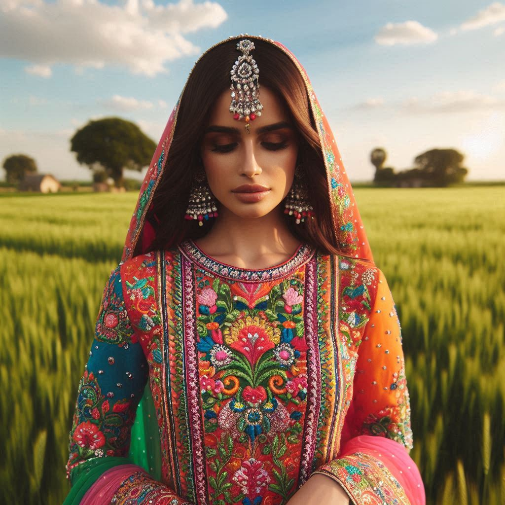
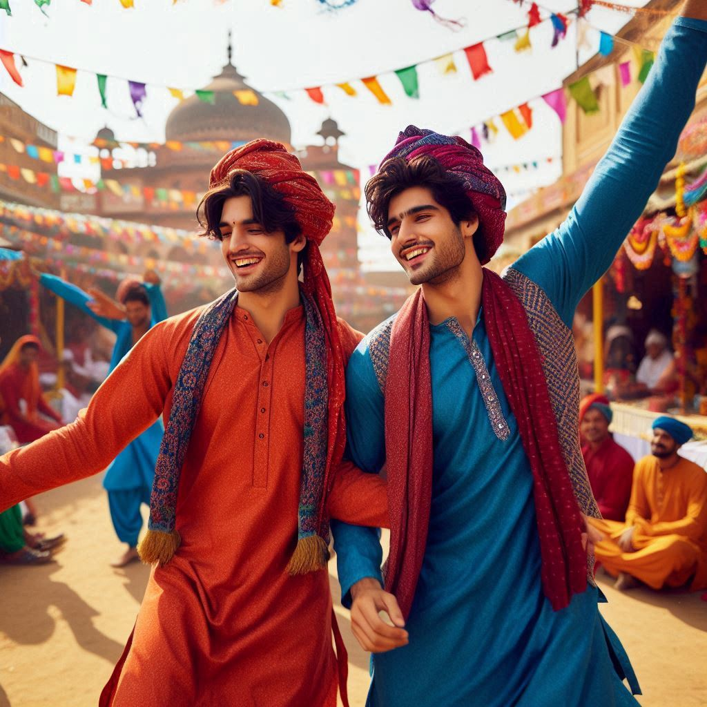

The traditional dress of Haryana reflects the rich cultural heritage and agrarian lifestyle of the state. Haryana, known for its vibrant festivals, rural traditions, and warrior culture, showcases a unique style of clothing that blends practicality with aesthetic appeal. The clothing varies slightly between different communities, but there are certain key features that define the traditional dress of both men and women in Haryana.
1. Men's Traditional Dress
- Kurta and Dhoti: The most common traditional attire for men in Haryana is the kurta (a long shirt) paired with a dhoti (a piece of cloth wrapped around the waist). This attire is worn during festivals, weddings, and other traditional events. The kurta is often plain or simple, while the dhoti can be made of cotton or silk, depending on the occasion.
- Sherwani: For formal occasions or weddings, men often wear a sherwani, a long coat-like garment, which is usually embroidered. It is worn with churidar or tight-fitting trousers and a stole or shawl.
- Pagri (Turban): The pagri, or turban, is an important symbol of honor and pride in Haryana. It is a long piece of cloth that is wrapped around the head, typically in a specific style depending on the region or occasion.
- Chappal: Traditional footwear for men includes chappals or sandals made from leather, which are comfortable and practical for everyday use.
2. Women's Traditional Dress
- Salwar Kameez: The most common traditional attire for women in Haryana is the salwar kameez, consisting of a long tunic (kameez) paired with loose-fitting trousers (salwar). The outfit is often complemented with a dupatta (a long scarf or shawl) draped around the shoulders.
- Lehenga Choli: For special occasions, like weddings and festivals, women wear the lehenga choli, a more elaborate outfit consisting of a long skirt (lehenga) paired with a short blouse (choli) and a dupatta. The lehenga is often richly embroidered with bright colors and intricate designs.
- Chunni: The chunni, or scarf, is an essential part of the traditional Haryanvi attire. It is draped over the head or shoulders, often with elaborate embroidery, and is an important cultural symbol of modesty and respect.
- Jewelry: Women in Haryana wear traditional jewelry such as bangles, necklaces, earrings, nose rings, and payals (anklets), which are important symbols of a woman’s marital status and social standing. Gajra (a flower garland) is also worn in the hair during festivals and weddings.


3. Footwear
Both men and women wear traditional chappals or juttis. These are comfortable, handmade shoes, often crafted from leather and adorned with embroidery or beads.
4. Color and Fabric
The clothing in Haryana tends to be made from comfortable, breathable fabrics such as cotton and silk, particularly in summer. The colors of Haryanvi clothing are typically bright and bold, with men favoring earthy tones and women preferring vibrant colors like red, green, and yellow, often with intricate embroidery.
5. Modern Influence
While the traditional dress is still widely worn during festivals, weddings, and cultural events, daily wear has shifted towards Western-style clothing, particularly in urban areas. However, traditional clothing still holds great cultural significance and is regularly seen at cultural functions, fairs, and other celebratory occasions.
Conclusion
In essence, the dress of Haryana reflects its agricultural roots and warrior spirit, with a blend of practicality for daily life and beauty for cultural expression during special occasions.